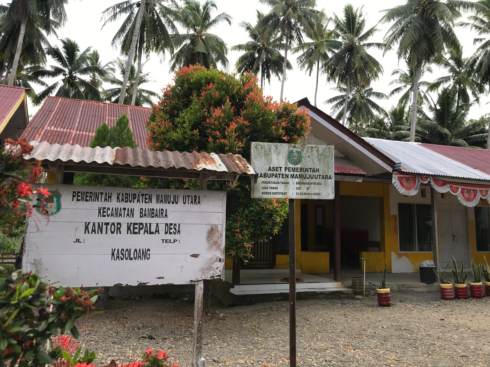

Sejarah Desa Kasoloang
Tertulis dengan cerita daerah pedesaan yang subur, tumbuhan yang menghijau, diatas tanah datar dan kemiringang ditumbuhi pohon dan semak yang masih lebat, hiduplah sekelompok masyarakat yang terdiri dari berbagai macam suku, yaitu Kaili, Bugis, Mandar, Tator dan Jawa yang hidup secara rukun dan damai. Desa Kasoloang terdapat 2Km ke arah selatan dari kota kecamatan Bambalamotu dan 1Km ke arah utara dari ibu kota kecamatan Bambaira. Desa Kasoloang kecamatan Bambaira dulunya merupakan wilayah daerah tertinggal, ini terlihat dari kondisi masyarakat masih banyak dibawah garis kemiskinan dan kurangnya sarana dan prasarana di daerah ini. Melihat kondisi masyarakat di desa Kasoloang untuk lebih meningkatkan dan memajukan daerahnya.
Desa Kasoloang lama-kelamaan menjadi ramai dengan adanya pendatang yang ingin menetap dan tinggal di desa itu. Tak kalah lagi desa Kasoloang sudah terkenal di kalangan penduduk atau desa sekitar bahkan terdengar sampai keluar kabupaten. Konon cerita di desa ini selain ditumbuhi pohon-pohon hijau juga nempunyai sebuah gunung yang dihimpit oleh sungai yang biasa disebut oleh masyarakat Kasoloang yang asal mulanya adalah Kasoloana yang artinya posisi. Muara sungai tepat garis lurus tenggelamnya matahari yang diambil dari bahasa suku Kaili. Adapun didasarkan pada keragaman suku/etnis yang menghuni wilayah yang datang dari berbagai penjuru, ada yang berasal dari selatan seperi Bugis, Mandar, Tator, dan Jawa.
Desa Kasoloang ini berarti "Posisi muara sungai sepanjang kurang lebih 400 meter sejajar garis lurus posisi tenggelamnya matahari pada saat itu" sampai saat ini yang dalam bahasa daerah Kaili Topodaa Kasoloana yang kemudian adanya suku Bugis masuk di wilayah ini diperkirakan tahun 1920-an sehingga nama Kasoloana berubah menjadi Kasoloang.
Di sisi lain desa Kasoloang juga terdapat pesisir pantai sepanjang kurang lebih 3500 meter, tepatnya berada di wilayah Selat Makassar yang merupakan tempat bagi para nelayan mencari ikan untuk pemenuhan kebutuhan sehari-hari dan tak kalah pentingnya bahwa posisi pantai desa Kasoloang merupakan destinasi wisata pantai yang bisa bersaing dengan destinasi wisata pantai daerah lain, karena pantai desa Kasoloang masih terjaga kelestariannya sehingga pepohonan yang tumbuh di sepanjang pantai yaitu Pohon Langi Bajo (nama pohon dengan sebutan bahasa Kaili dan Bugis).
Pantai desa Kasoloang juga terdapat salah satu hewan atau reptil yang harus dilindungi yaitu Penyu. Hewan ini berdasarkan data atau laporan bagi masyarakat yang tinggal di pesisir pantai desa Kasoloang bahwa hewan ini bertelur pada bulan Mei sampai bulan Juli.
Demografi
Letak desa Kasoloang secara geografis terletak di bagian selatan wilayah kecamatan Bambaira dengan batas-batas wilayah sebagai berikut :
- Sebelah utara berbatasan dengan Desa Bambaira
- Sebelah selatan berbatasan dengan desa Randomayang kecamatan Bambalamotu
- Sebelah barat berbatasan dengan selat Makassar
- Sebelah timur berbatasan dengan desa Kalukunangka dan desa Wulai
Musim Hujan berlangsung pada bulan November sampai bulan Maret dan musim kemarau dimulai dari bulan Juli sampai bulan Oktober dan musim pancaroba mulai pada bulan April sampai bulan Juni. Dengan curah hujan tinggi terjadi pada bulan Januari (332,63mm) dan curah hujan rendah pada bulan Maret (150,71mm).
Secara geografis desa Kasoloang mempunyai potensi yang besar disebabkan lokasi pertanian, perkebunan yang subur serta ditunjang dengan beberapa sungai yang mengelilingi desa Kasoloang. Jarak desa ke ibu kota kecamatan 2Km, jarak desa ke ibu kota kabupaten 13Km dan jarak antara desa ke ibu kota provinsi adalah 290km.
Keadaan penduduk desa Kasoloang pada tahun 2020 berjumlah 2124 jiwa yang terdiri dari laki-laki 1061 jiwa dan perempuan 1063 jiwa yang berjumlah 552 Kepala Keluarga. Di desa Kasoloang terdiri dari beberapa suku antara lain Bugis, Mandar, Kaili, Tator, Jawa dan beberapa suku lain yang ikut bercocok tanam di desa ini.
Keadaan Sosial
Masyarakat desa Kasoloang sebagian besar menyadari perlunya membangun kebersamaan, kerja gotong royong dan hidup secara kelompok untuk merencakanan program dan berpatisipasi dalam kegiatan kemasyarakatan, kondisi sosial budaya masyarakat ditunjukkan masih rendahnya kualitas dari sebagian SDM masyarakat. Meskipun demikian tingkat partisipasi masyarakat dalam memikirkan masa depan desa cukup tinggi. Ini dibuktikan dengan besarnya peran serta masyarakat dalam proses penyusunan RPJM-Desa.
Masyarakat pada umumnya sudah banyak menyadari kesehatan sangatlah penting agar segala aktivitas keseharian dapat terselesaikan sesuai yang kita inginkan, maka dari itu masyarakat Kasoloang sangat memelihara kebersihan dan keselamatan demi diri mereka. Walaupun masyarakat mempunyai kemampuan yang terbatas dalam pemeliharaan dan fasilitas kesehatan yang sesuai dengan ketentuan pemerintah.
Keadaan Ekonomi
Masyarakat desa Kasoloang umumnya bermata pencaharian petani seperti perkebunan kelapa sawit, kako, jagung, padi, Nelayan dan buruh tambak. Masyarakat desa Kasoloang memiliki potensi sumber daya alam yang besar karena disamping lahan pertanian yang masih cukup luas dan memiliki sungai, material pasir, atu namun karena jalan menuju perkebunan yang belum sepenuhnya terakses sehingga seluruh sumber daya yang dimiliki tidak dapat dikembangkan sesuai dengan fungsinya.
| No | Mata Pencaharian | Jumlah |
|---|---|---|
| 1 | Petani / Pekebun | 407 orang |
| 2 | Wiraswasta | 61 orang |
| 3 | Nelayan | 38 orang |
| 4 | PNS | 34 orang |
| 5 | Buruh | 27 orang |
| 6 | Pegawai Swasta | 18 orang |
| 7 | POLRI | 1 orang |
| 8 | TNI | 3 orang |
| 9 | Bidan Honorer | 4 orang |
| 10 | Perawat Honorer | 2 orang |
| 11 | Lain-lain | 37 orang |
Struktur penduduk menurut kelompok umur dan jenis kelamin di desa Kasoloang tahun 2020
| No | Kelompok Umur | Jumlah |
|---|---|---|
| 1 | 0 - 1 Tahun | 28 |
| 2 | 1 - 4 Tahun | 221 |
| 3 | 5 - 14 Tahun | 583 |
| 4 | 15 - 39 Tahun | 556 |
| 5 | 40 - 64 Tahun | 525 |
| 6 | 65 tahun ke atas | 211 |
Masyarakat desa Kasoloang yang dihuni 2.124 jiwa terdiri dari suku bangsa yang berbeda yaitu :
- Bugis = 846 Jiwa
- Mandar = 685 Jiwa
- Kaili = 571 Jiwa
- Tator = 2 Jiwa
- Jawa = 21 Jiwa
Berdasarkan data profil desa jumlah penduduk desa Kasoloang adalah 2.124 jiwa yang komposisi tersaji dalam tabel berikut :
| NO | Nama Dusun | Penduduk | JUMLAH | |
|---|---|---|---|---|
| LK | PR | |||
| 1 | Kasoloang | 150 | 161 | 311 |
| 2 | Mesanga | 90 | 100 | 190 |
| 3 | Torenda | 183 | 176 | 359 |
| 4 | Binoli | 216 | 214 | 430 |
| 5 | Bantalaka | 165 | 155 | 320 |
| 6 | Durian Guni | 103 | 101 | 204 |
| 7 | Pebondo I | 154 | 156 | 310 |
| Total Keseluruhan | 2.124 Jiwa | |||